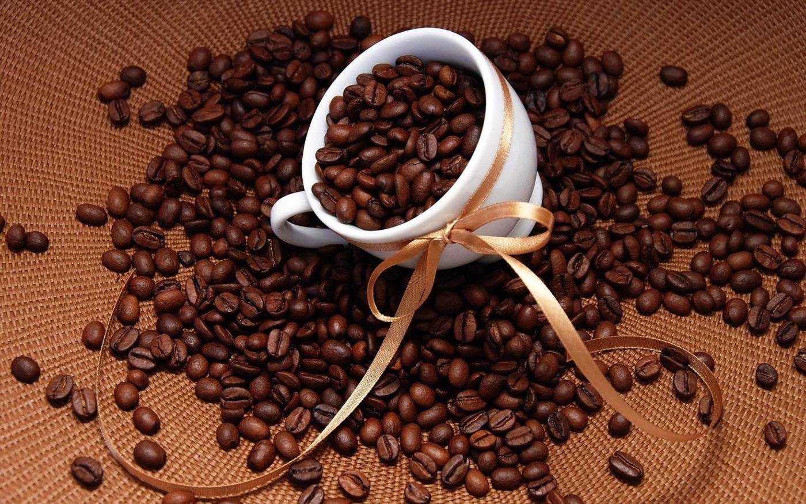
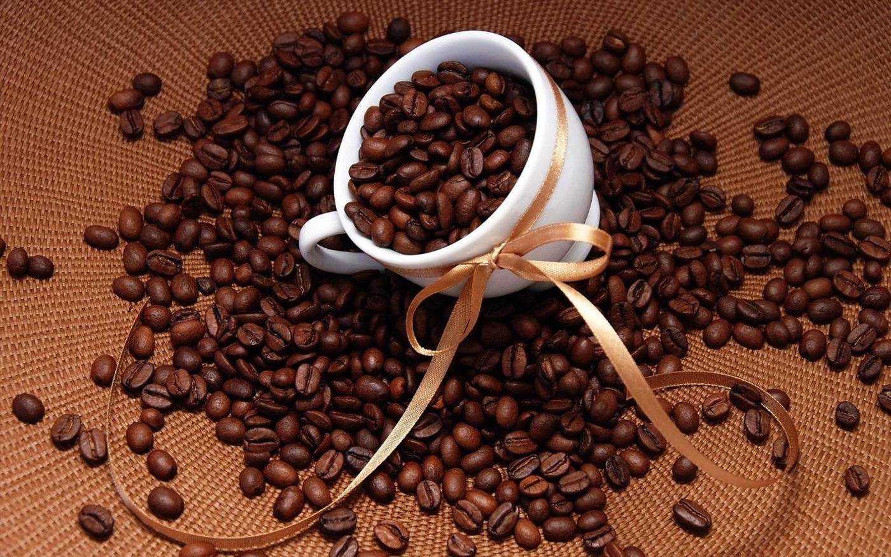

Tây Nguyên - quê hương mới của cà phê vối
Trong 20 tỉnh trồng cà phê với 710.590ha, thì 5 tỉnh Tây Nguyên chiếm 639.000ha (89,93%), trong đó trên 85% diện tích là cà phê vối.
Năng suất cà phê nhân cao của 5 tỉnh Tây Nguyên cao hơn bình quân 15 tỉnh còn lại từ 20 đến 25%. Với sản lượng xuất khẩu cà phê hiện nay của nước ta hơn 1,77 triệu tấn,
đã mang lại kim ngạch xuất khẩu 4 tỷ USD (cao hơn kim ngạch xuất khẩu gạo của cả nước khoảng 15 - 20%).
Lịch sử cây cà phê ở Việt Nam
Theo tài liệu, năm 1857, một số người Pháp mang cà phê chè (Arabica) vào Việt Nam trồng thử ở Hà Nam, Thanh Hóa, Nghệ An, Quảng Bình, Quảng Trị, rồi sau đó cũng trồng thử ở Tây Nguyên và Đông Nam bộ.
Nhìn chung, cà phê chè vẫn mọc được trên các vùng đất đã thử nghiệm, nhưng cho năng suất thấp, một phần do quảng canh, mặt khác do sâu đục thân và bệnh rỉ sắt phá hại nặng nên không thể phát triển rộng rãi được.
Năm 1908, người Pháp tiếp tục nhập thêm 2 giống cà phê Robusta và Excelsa (cà phê mít) vào trồng. Từ đó ở Việt Nam tồn tại cả 3 giống cà phê: Cà phê chè (Coffea Arabica), cà phê vối (Coffea Canephora) và cà phê mít (Coffea Excelsa).
Cà phê được cho là thức uống cao cấp, cây "hái ra tiền", nhưng người dân thời ấy cơm không đủ ăn, áo không đủ mặc, nên coi đây là thức uống xa xỉ. Lúc này người Pháp lập ra nhiều đồn điền,
bắt phu đi làm cực khổ, nhưng sản phẩm cà phê thu được cũng chỉ dành cho người Pháp. Năm 1930, cả nước cũng chỉ trồng được 5.900ha cà phê, trong đó có 4.700ha cà phê Arabica, 900ha cà phê Excelsa và 300ha cà phê Robusta.
Cơ hội xác định vị thế của cây cà phê ở Việt Nam
Đến năm 1986, cả nước chỉ trồng được 50.000ha cà phê các loại, chủ yếu tập trung ở 5 tỉnh Tây Nguyên, cho sản lượng 18.400 tấn, tức bình quân cho năng suất 380kg cà phê nhân/ha. Số cà phê này cũng chỉ xuất bán cho các nước theo hợp đồng đã ký, phần tiêu thụ nội địa rất ít.
Càng ngày, các hoạt động nghiên cứu khoa học về cà phê được đầu tư tốt hơn nên cũng xác định được các địa danh và kỹ thuật thích hợp cho từng loại cà phê phát triển.
ĐĂNG KÝ NHẬN TIN